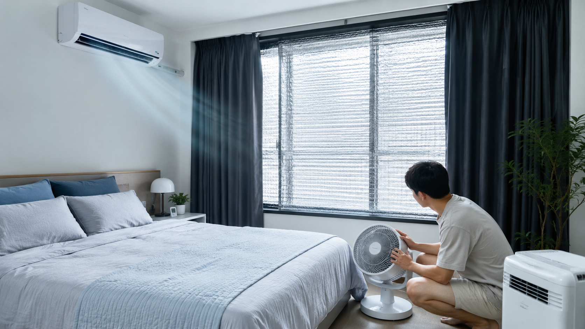
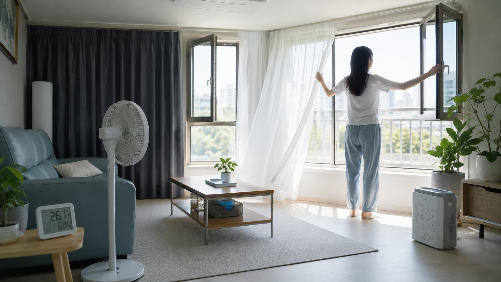
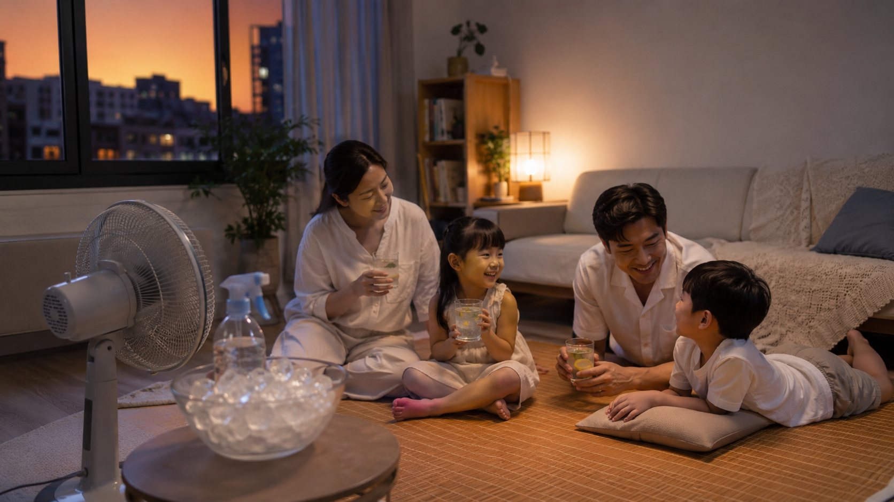

폭염에 집 안 온도 낮추는 현실적인 방법
한여름에는 에어컨을 켜도 집 안이 쉽게 시원해지지 않을 때가 있습니다. 낮 동안 벽과 창문, 바닥이 열을 머금고 있다가 저녁까지 천천히 뿜어내기 때문입니다.
이럴 때는 냉방기만 세게 트는 것보다 열이 들어오는 길을 먼저 막고, 이미 들어온 열을 밖으로 빼내는 순서로 관리하는 것이 좋습니다.

햇빛이 강한 시간에는 창문보다 차광이 먼저입니다
오전부터 오후까지 햇빛이 직접 들어오는 창은 커튼이나 블라인드로 먼저 막아야 합니다. 특히 남향과 서향 창은 실내 온도를 빠르게 올리기 때문에 얇은 커튼보다 암막 커튼이나 차광막이 더 효과적입니다.
창문을 열어두면 바람이 들어와 시원할 것 같지만, 바깥 공기가 더 뜨거운 시간에는 오히려 열기가 집 안으로 들어올 수 있습니다. 낮에는 닫고, 기온이 내려간 밤이나 이른 아침에 짧게 환기하는 편이 낫습니다.

에어컨은 처음에 강하게, 이후에는 유지 위주로 사용합니다
에어컨을 약하게 오래 켜면 전기요금이 덜 나올 것 같지만, 실내가 이미 뜨거운 상태에서는 원하는 온도까지 내려가는 데 시간이 오래 걸립니다. 처음에는 강하게 작동시켜 온도를 낮춘 뒤, 이후에는 적정 온도로 유지하는 방식이 효율적입니다.
선풍기나 서큘레이터를 함께 쓰면 차가운 공기가 한쪽에만 머물지 않고 방 전체로 퍼집니다. 바람 방향은 사람에게 직접 맞추기보다 천장이나 벽을 향하게 두면 공기 순환이 부드럽습니다.
습도를 낮추면 같은 온도도 덜 덥게 느껴집니다
여름에 집이 답답하게 느껴지는 이유는 온도뿐 아니라 습도 때문입니다. 습도가 높으면 땀이 잘 마르지 않아 같은 온도에서도 더 덥게 느껴집니다.
빨래는 실내에 오래 널어두지 말고, 욕실 사용 후에는 문을 열어 습기가 빠지게 해야 합니다. 제습기나 에어컨 제습 기능을 함께 활용하면 끈적한 느낌을 줄이는 데 도움이 됩니다.

작은 열원도 줄이면 효과가 쌓입니다
낮 시간에는 전기밥솥 보온, 오븐, 건조기처럼 열을 내는 제품 사용을 줄이는 것이 좋습니다. 조명도 오래 켜두면 은근히 열이 쌓이므로 필요 없는 방은 꺼두는 편이 낫습니다.
집 안 온도를 낮추는 핵심은 큰 방법 하나보다 작은 습관을 함께 적용하는 것입니다. 햇빛을 막고, 시원한 시간에 환기하고, 공기를 순환시키고, 습도를 낮추면 여름철 실내가 훨씬 덜 답답해집니다.